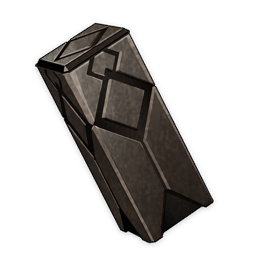

Materials
Lustrous Stone from Guyun
Lustrous Stone from Guyun
Trophies
3★
Weapon Ascension Material
Weapon Ascension Material.
The learned know that Guyun Stone Forest is far more than simply a miraculous sight on the sea to behold: It is the cemetery of the former gods of Liyue. Hatred and filth have periodically risen up from it, but all have been subdued by a demon-conquering young man.
Sources:
Crafted
Domain of Forgery: Thundercloud Altar (Monday/Thursday/Sunday)